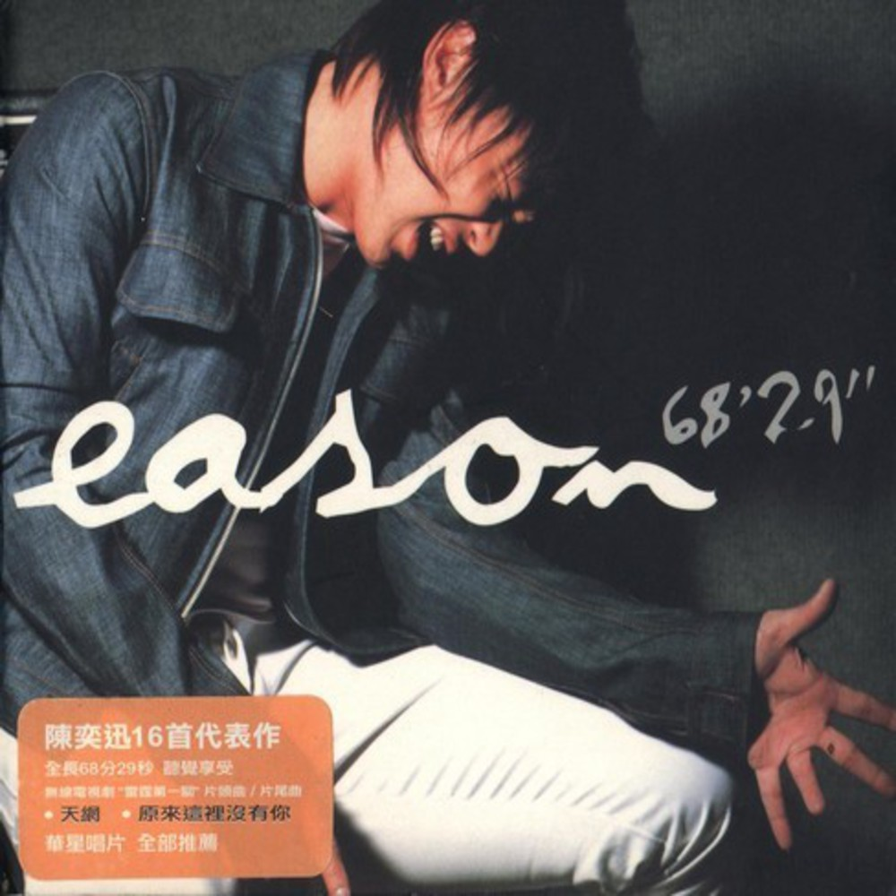
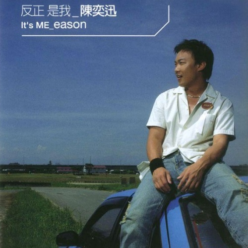

陳奕迅
專輯簡介
《陳奕迅》是香港歌手陳奕迅於1996年12月11日發行的粵語專輯，專輯內共有10首歌曲
本專輯為陳奕迅奪得第14屆新秀歌唱大賽冠軍、加入華星唱片後推出的首張廣東專輯，收錄了廣受歡迎的歌曲《傷信》和第一首派台歌《時代曲》，而第一首錄音的歌曲則是《遊離份子》。曲目
1.時代曲
2.傷信
3.游離份子
4.我怕你不肯
5.有意無意
6.安守本份
7.愛情，幼稚！
8.從未痴心
9.其實我記得
10.當心中有戀愛感覺

一滴眼淚
專輯簡介
《一滴眼淚》是香港歌手陳奕迅的個人國語專輯，於1996年12月發行。曲目
1.一滴眼淚
2.拜訪
3.愛到瘋
4.永遠都天明
5.情深怎麼辦
6.我怎麼可以哭
7.學會愛
8.Style
9.二個人的夜晚
10.感情約
-
與我常在
專輯簡介
《與我常在》是香港歌手陳奕迅於1997年發行的粵語專輯，共有10首歌曲和一首Demo。曲目
1.現場直播
2.與我常在
3.愛沒有左右
4.生命有幾好
5.抱擁這分鐘
6.那一夜有沒有雪?（Demo Version）
7.伴遊
8.跟我走好嗎
9.今天等我來
10.敵人
11.那一夜有沒有說?
-
醞釀
專輯簡介
《醞釀》是香港歌手陳奕迅的個人國語專輯，於1997年11月發行。曲目
1.預感
2.醞釀
3.攤開雙手
4.換季
5.愛的傀儡
6.感動
7.終於放開了她
8.好聚好散
9.寵愛
10.La'mour
11.Taipei City
12.預感（Kara）
-
新生活
專輯簡介
《新生活》是香港歌手陳奕迅的粵語新曲及精選輯，於1998年12月10日發行。曲目
1.終於一百日 (新曲)
2.新生活 (新曲)
3.游移的傷口 (Talk)
4.我甚麼都沒有
5.地獄咒 (Talk)
6.與我常在
7.抱擁這分鐘
8.天一半、地一半 (Talk)
9.天下無雙
10.今天等我來
11.回絕 (Talk)
12.傷信
13.我的快樂時代
14.多一點 (Acoustic Version)
15.時代曲
16.遊離份子
17.我怕你不肯
18.美滿人生 (新曲)
19.超人的主題曲
-
大激想
專輯簡介
《大激想》是華星唱片為華星三寶（梁漢文、楊千嬅及陳奕迅）推出的一張合輯，主打歌曲為同名主打《大激想》。曲目
1.大激想
2.只要為我好
3.請你
4.美滿人生
-
我的快樂時代
專輯簡介
本專輯為陳奕迅加入華星唱片後推出的第三張廣東專輯，收錄了廣受歡迎的歌曲《天下無雙》和與專輯同名之作《我的快樂時代》，另外還收錄一首日本歌手玉置浩二舊作品《Mr Lonely》的粵語改編之作《愈想愈無謂》。
承繼過往兩張廣東專輯的習慣，收錄一些陳奕迅親自作曲的作品，是次專輯收錄了兩首由他作曲、黃偉文填詞的歌曲，分別是《新曲＋精選》和《反高潮》，當中《新曲＋精選》的歌詞更是由以往的廣東歌曲的歌名組合而成，甚為特別。
多方面的選曲和嘗試使這張專輯得到空前的成功，《天下無雙》一曲不僅讓陳奕迅獲得多年來第一首十大中文金曲頒獎禮的「十大金曲獎」，還使他贏得首個叱吒樂壇流行榜頒獎典禮的「叱吒樂壇至尊唱片大獎」。
曲目
CD 1
1.我的快樂時代
2.我甚麼都沒有
3.天下無雙
4.黃金時代
5.新曲+精選
6.愈想愈無謂
7.相信相依
8.兩種講法
9.請相信我
10.反高潮
CD 2
1.Mr. Cab Driver
2.時代曲
3.尋開心
4.不再讓你孤單

幸福
專輯簡介
《幸福》是香港歌手陳奕迅於1999年11月發行的粵語EP，專輯分為兩部分，第一部分為新曲，另一部分為舊曲番唱，全碟合共有11首歌曲。曲目
CD 1
1.幸福摩天輪
2.飄飄飄飄
3.時光倒流二十年
4.忽然難過
5.專家話
CD 2
1.有了你（陳奕迅大個唱演唱會'99 10月9日現場錄音）
2.春光乍洩（陳奕迅大個唱演唱會'99 10月9日現場錄音
3.改造人（陳奕迅大個唱演唱會'99 10月9日現場錄音）
4.垃圾（叱咤903狂熱份子陳奕迅音樂會6月15日現場錄音）
5.非走不可（叱咤903狂熱份子陳奕迅音樂會6月15日現場錄音）
6.超人的主題曲+屎撈人（梁漢文合唱）（叱咤903狂熱份子梁漢文音樂會4月23日現場錄音）
-
天祐愛人
專輯簡介
《天祐愛人》是香港歌手陳奕迅的粵語音樂專輯，於1999年5月26日發行。曲目
1.昨日
2.今日
3.每一個明天
4.眼眉調
5.一
6.第五個現代化
7.快高長大
8.如果這一秒鐘你跟我講你不愛我
9.我的世界末日
10.貝多芬與我

婚禮的祝福
專輯簡介
《婚禮的祝福》是香港歌手陳奕迅於1999年發行的國語專輯，專輯內有10首歌曲。
《婚禮的祝福》為陳奕迅發行的第三張國語專輯，內收錄十首歌曲，其中，《拔河》為陳奕迅、梁漢文首次合唱的作品，另外亦收錄了黑松沙士廣告歌曲《我的開始在這裡》。
曲目
1.婚禮的祝福
2.拔河(梁漢文合唱)
3.我的開始在這裡
4.轉機
5.My Girl
6.掏空
7.傷心證明書
8.1個2個3個4個
9.Just Between The Two Of Us
10.存在
- 
68'29"
專輯簡介
《68'29"》是香港歌手陳奕迅於2000年9月27日發行的粵語精選輯，專輯內共有16首歌曲。曲目
1.原來這裡沒有你
2.天網
3.天下無雙
4.我的快樂時代
5.黃金時代
6.我甚麼都沒有
7.第五個現代化
8.貝多芬與我
9.今天等我來
10.抱擁這分鐘
11.現場直播
12.傷信
13.遊離份子
14.安守本份
15.時代曲
16.我們不哭了
-
Nothing Really Matters
專輯簡介
《Nothing Really Matters》是香港歌手陳奕迅的粵語音樂專輯，於2000年7月21日發行。
此乃陳奕迅於華星唱片時期的最後一張錄音室專輯，因推出大碟後不久便轉簽英皇娛樂，這專輯並沒有獲得足夠宣傳。然而陳奕迅在這專輯嘗試了多種曲風，例如《Made In Hong Kong》的重型搖滾、《美麗有罪》的Techno Music等，均為Eason 首次嘗試的曲風。另外，這專輯亦收錄了Eason 一首廣為人知的歌曲《黑夜不再來》，此曲其後被容祖兒、蘇永康等歌手翻唱。
曲目
1.送院途中
2.黑夜不再來
3.美麗有罪
4.戲迷情人
5.和平飯店
6.我感激
7.到此一遊
8.當這地球沒有花
9.Made in Hong Kong
10.愛上你是我眼睛的錯
-
打得火熱
專輯簡介
《打得火熱》為香港歌手陳奕迅的粵語音樂專輯，於2000年9月29日正式發行。
《打得火熱》為陳奕迅加盟英皇娛樂後第一張廣東專輯。專輯內收錄10首粵語新曲，當中以《打得火熱》與《K歌之王》兩首歌曲較為人所知，亦因此大受歡迎，獲得大量獎項。（順帶一提，《K歌之王》其後被錄製成同歌名的國語版本，成功令他的名字打進台灣與中國內地市場。）本專輯雖收錄了《活躍症》這類型的搖滾歌曲，但整體上曲風與類型均比其上一張、華星唱片發行的粵語專輯《Nothing Really Matters》（2000年）趨向商業化。
曲目
1.K歌之王
2.打得火熱
3.新廣告歌
4.低等動物
5.綿綿
6.美麗謊言
7.吹微風
8.溫室效應
9.活躍症
10.下週同樣時間 (再見!)
-
The Easy Ride
專輯簡介
《The Easy Ride》為香港歌手陳奕迅的粵語音樂專輯，於2001年11月8日正式發行。
本專輯為陳奕迅加入英皇娛樂後首個紅館個人演唱會「The Easy Ride Live in Hong Kong 2001」（2001年11月9-17日）的點題專輯，於演唱會前推出，亦是加入英皇娛樂兩年來第三張粵語專輯（前兩張粵語唱片為《打得火熱》及《Shall We Dance? Shall We Talk!》）。專輯其中一個特色為全部歌曲的歌名均由四個字組成，並均由黃偉文填詞，而曲風亦比上兩張粵語專輯多元化，有由陳奐仁作曲的搖滾歌曲《阿士匹靈》，有以Techno編曲為主的《衝口而出》，亦不乏像《活著多好》的純鋼琴慢板小品。因此專輯推出跟演唱會後亦受到高度評價。
曲目
1.阿士匹靈
2.陽性反應
3.衝口而出
4.打回原形
5.我不好愛
6.熱帶雨林
7.人工智慧
8.結束開始
9.活著多好
10.他一個人
11.不知所謂
- 
反正是我
專輯簡介
《反正是我》是香港歌手陳奕迅於2001年發行的國語專輯，發行日期為2001年7月17日。
《反正是我》是陳奕迅加盟英皇娛樂後首張國語唱片，專輯令陳奕迅在台灣、中國內地甚至東南亞等華人社區聲名大噪，《低等動物》、《不如這樣》、《愛是懷疑》、《K歌之王》等歌曲更成為他廣為人知的國語作品。 並且讓他第一次入圍台灣金曲獎最佳國語歌曲男演唱人
曲目
1.Because You're Good To Me
2.低等動物（國）
3.不如這樣
4.愛是懷疑
5.我也不會那麼做
6.K歌之王（國）
7.沒有你
8.冤家
9.全世界失眠
10.Good Times